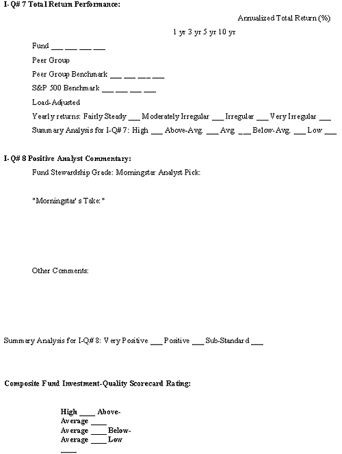

Financial intermediaries become fund sponsors when they create and operate mutual funds. Such funds are a type of investment company that pools money from the investing public and collectively invests this money in stocks, bonds and money market instruments. A mutual fund provides individual investors with a convenient form of investing, professional management, broad diversification and liquidity.
The purpose of this tutorial is to show the investing public how to use a simple eight-point, fund evaluation technique to select and monitor a mutual fund. But first we are going to step back and put the mutual fund business into historical perspective, review the operational workings of a fund and look at some of the broad issues related to today's mutual fund industry. (For background reading, see Mutual Fund Basics.)
Return to the Main Menu.
Historians are uncertain of the origins of investment funds. There are some indications that the idea of pooling assets for investment purposes began in the Netherlands in the late 18th or early 19th century. Closed-end investment funds did take root in Great Britain and France in the 1800s, making their way to the United States in the 1890s. (For more insight, see Uncovering Closed-End Funds.)
The creation of the Massachusetts Investors' Trust in Boston in 1924, which went public in 1928, is cited as the arrival of the modern mutual fund in the U.S. In 1929, there were 19 open-ended funds competing with nearly 700 of the closed-end variety. The market crash of 1929 wiped out the highly leveraged closed-end funds, but a small number of opened-ended funds managed to survive.
The creation of the Securities and Exchange Commission (SEC), the passage of the Securities Act of 1934 and the Investment Company Act of 1940 put the mutual fund business on a solid regulatory basis with safeguards for investors. In the early 1950s, the mutual fund count topped 100 and continued to grow through the next two decades. The bull markets of the 1980s and 1990s accelerated this growth, pushing the fund count over 3,000, with total assets surpassing the $1 trillion mark during this period.
In response to the mutual fund scandals of the 2003-2004 period, corrective regulatory and industry practices were, and continue to be, enacted. By the end of 2006, the mutual fund business was still growing and mutual funds in the U. S. numbered more than 8,000 with asset holdings of $10.4 trillion and new markets opening up around the world. (For related reading, see A Brief History Of The Mutual Fund.)
Return to the Main Menu.
A fund sponsor - generally a financial intermediary like Fidelity Investments or Vanguard - organizes a mutual fund as a corporation; however, it is not an operating company with employees and a physical place of business in the traditional sense. A fund is a "virtual" company, which is typically externally managed. It relies on third parties or service providers, either fund sponsor affiliates or independent contractors, to manage the fund's portfolio and carry out other operational and administrative activities.
Figure 1, below, has been sourced from the Investment Company Institute's (ICI) 2005 ICI Fact Book to illustrate the organizational structure of a mutual fund.
The fund sponsor raises money from the investing public, who become fund shareholders. It then invests the proceeds in securities (stocks, bonds and money market instruments) related to the fund's investment objective. The fund provides shareholders with professional investment management, diversification, liquidity and investing convenience. For these services, the fund sponsor charges fees and incurs expenses for operating the fund, all of which are charged proportionately against a shareholder's assets in the fund.
The most prevalent and well-known type of mutual fund operates on an open-ended basis. This means that it continually issues (sells) shares on demand to new investors and existing shareholders who are buying. It redeems (buys back) shares from shareholders who are selling.
Mutual fund shares are bought and sold on the basis of a fund's net asset value (NAV). Unlike a stock price, which changes constantly according to the forces of supply and demand, NAV is determined by the daily closing value of the underlying securities in a fund's portfolio (total net assets) on a per share basis. (For more insight, read What is a mutual fund's NAV?)
In some instances, investors can purchase shares directly from the fund, but most funds are sold through an investment intermediary: a broker, investment advisor, financial planner, bank or insurance company. These intermediaries are compensated for their services through a variety of sales charge options (loads) or deferred/ongoing 12b-1 fees. The former come directly out of the investor's pocket (deducted from the amount to be invested) and the latter as a proportionate deduction of the shareholder's fund assets. (For more on fees, read Stop Paying High Fees.)
| Shareholders |
| Board of Directors
Oversees the fund\'s activities, including approval of the contract with the management company and certain other services providers. |
| Mutual Fund |
| Investment Advisor | Principal Underwriter | Administrator | Transfer Agent | Custodian | Independent Public Accountant |
|
Manages the fund\'s portfolio according to the objectives and policies described in the fund\'s prospectus. |
Sells fund shares, either directly to the public or through other firms (such as broker dealers). |
Oversees the performance of other companies that provide services to the fund and ensures that the fund\'s operations comply with the applicable federal requirements. |
Executes shareholder transactions, maintains records of transactions and other shareholders\' account activities, and sends account statements and other documents to shareholders. |
Holds the fund\'s assets, maintaining them separately to protect shareholder interests. |
Certifies the fund\'s financial statements. |
| Figure 1: Investment Company Institute\'s (ICI) 2005 ICI Fact Book |
Return to the Main Menu.
According to the 2005 Investment Company Institute Fact Book, nearly 600 financial intermediaries in the U.S. and around the world compete in the U.S. mutual fund market. It is estimated that, as of year-end 2004, the top 25 of these firms held 74% of this market's $8.2 trillion total assets under management.
The 8,000 plus publicly traded mutual funds in the U. S. break down by type as follows:
It is a huge understatement to say that for the investing public, this number of fund choices is absolutely overwhelming.
It is important for fund investors to appreciate the importance of investing in funds that are sponsored by financial intermediaries in good standing. That is to say, that they are not saddled with regulatory problems resulting from questionable management practices and governance problems. The serious mutual fund scandals of 2002 and 2003 are, hopefully, behind us. However, it is prudent for fund investors to maintain a watchful eye in this area.
Investors should start by screening for those fund sponsors that are scandal-free and that do a good job of aligning their interests with those of their fund shareholders. Professionals in the mutual fund industry refer to this as good stewardship. The most accessible source of stewardship grades is a Morningstar Fund Report. Morningstar's grading of fund sponsor stewardship has become an important part of its evaluative reporting on the mutual fund industry. (For more insight, see Morningstar's Stewardship Grade Service A Welcome Addition.)
It is natural that opinions will differ on fund-sponsor quality. However, it is worthwhile to note that there appears to be a connection between high quality fiduciary management at the fund sponsor level and high quality investment performance at the individual fund level. (For related reading, see Picking The Right Mutual Fund.)
Return to the Main Menu.
Investment research firms use data provided by the fund sponsor to generate a variety of analytical perspectives. These are used by professional and non-professional investors in selecting and monitoring mutual funds. For funds that are publicly traded and the object of significant investor interest, this information is distilled into fund research reports. These are available to the investing community through a number of services such as Morningstar and Value Line.
The content of such a report is comprehensive, containing dozens of data points, ratios and informational perspectives that reveal the investment quality of a fund. To make things simple for the average investor, we'll take this abundance of information and focus on eight fundamental indicators of investment quality. An investor can use this perspective to make intelligent decisions on whether to buy, sell or hold a mutual fund.
These eight evaluative fund investment qualities are listed below. Subsequently, you will find in-depth discussions of each of these investment quality indicators, including where to find them, what they mean and how to use them). Armed with this know-how, you will be equipped to make informed mutual fund investment choices.
A fund does not have to be perfect in all aspects to be top rated. For example, what we are looking for is a fund that has a composite investment quality score from above-average to high. Completing a scorecard will be relatively easy once you learn how the system works from the instruction provided herein. A little experience and some common sense will serve you well.
Return to the Main Menu.
Below is a sample of the Fund Investment Quality Scorecard. The FIQS might look confusing to you at this point, but do not despair. After you absorb the lessons provided in the following chapters, its simplicity and practical application will be readily apparent. Readers may reproduce this form for their own use by downloading the Fund Investment-Quality Scorecard PDF.
{kind=link}